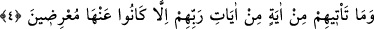
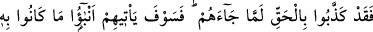
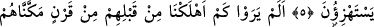
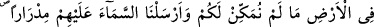
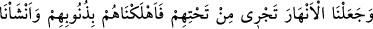
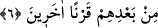

HAKKI İNKAR EDENLER
4. Rablerinin âyetlerinden onlara (kâfirlere) bir âyet gelmeyedursun, o
âyetlerden ille de yüz çevirirler.
5. Gerçekten onlar, kendilerine Hak geldiğinde onu yalanlamışlardı. Fakat
yakında onlara alay ettikleri şeyin haberleri gelecektir.
6. Görmediler mi ki, onlardan önce yeryüzünde size vermediğimiz bütün
imkânları kendilerine verdiğimiz, gökten üzerlerine bol bol yağmurlar indirip
evlerinin altından ırmaklar akıttığımız nice nesilleri helâk ettik. Biz onları,
günahları sebebiyle helâk ettik ve onların ardından başka nesiller yarattık.
Buradaki “âyetler”den maksad, ya Cenab-ı Hak katından indirilen Kur’an âyetleridir
(tenzîlî âyetlerdir) ki onların gelmesi, nâzil olmalarıdır. O zaman mânâ şöyledir:
“Mekkeli müşriklere Kur’an âyetlerinden hiç bir âyet gelmez ki, ondan yüz çevirmiş
olmasınlar.” Yani onlar, Kur’an âyetlerinde bildirilen hakikatlere iltifat etmezler.
Aksine onları yalanlarlar ve onlarla alay ederler.
Ya da buradaki “âyetler”den murad, yaratılışla ilgili âyetler (âyât-ı tekvîniyye) dir.
Mûcizeleri ve Allah’ın yarattığı diğer hayret verici iş ve varlıklar buna dahildir. Bu
kabil âyetlerin gelmesi ise, onlara açıkça gösterilmesidir. Bu takdirde mânâ şöyledir:
“Allah’ın vahdaniyyetine delalet eden yaratılışla ilgili âyetlerden hiçbir âyet onlara
gösterilmez ki, ondan yüz çevirmesinler. Onlar yaratana îman etmeye sevk edecek doğru
bir düşünce ve bakışı terk etmesinler.
Burada, onların tekvînî ve tenzîlî âyetlerden yüz çevirmedeki aceleciliklerinin
kemâline ve bu âyetler geldiği anda hiç düşünmeden derhal inkâr edişlerine işaret
vardır. Nitekim bundan sonraki âyet bunu açıklamaktadır.